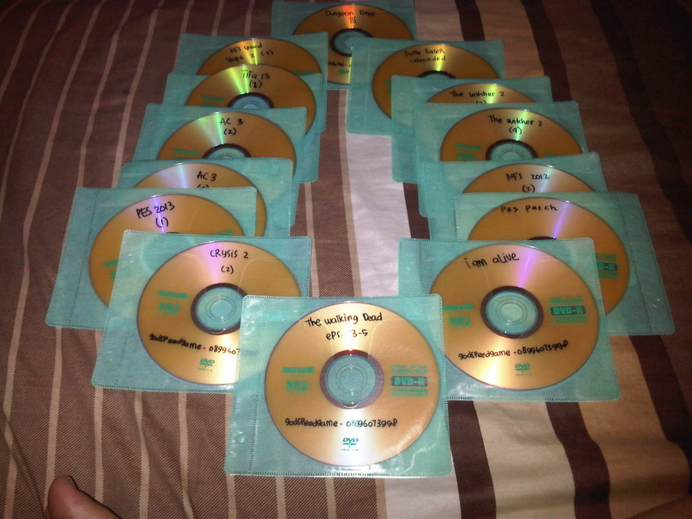
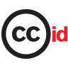

Kajian
-
 17 Dec 2018
17 Dec 2018Sumber Pembelajaran Terbuka Sebagai Salah Satu Bidang Penerapan Lisensi CC
Sumber pembelajaran kini tersedia dengan banyak ragam mulai dari buku teks cetak ke buku digital, gambar, video, infografik, permainan video, dan media lainya. Seiring berkembangnya teknologi internet, sumber pembelajaran tersebut...
Tags:
-
12 Nov 2018
Apa itu Freedom of Panorama?
Anda suka mengaambil gambar di ruang publik? Seperti gedung, patung, monumen, lukisan di suatu pameran, koleksi museum, atau papan reklame? Bagaimana jika proses pengambilan gambar tersebut dikategorikan sebagai “pelanggaran hak...
Tags:
-
 28 Oct 2018
28 Oct 2018#OpenAccessWeek - Pencatatan Kebijakan Pengarsipan Mandiri oleh Penulis di Situs Web SHERPA/RoMEO
Logo Pekan Keterbukaan Akses Internasional diterjemahkan oleh Hilman Fathoni, templat disediakan oleh Open Access Week, di openaccessweek.org, dengan lisensi CC BY. Open Access Week Artikel ini merupakan bagian dari agenda...
Tags:
-
26 Oct 2018
#OpenAccessWeek - Pengalihan Hak Cipta (Copyright Transfer Agreement) Ciptaan vs Pelisensian Ciptaan
Logo Pekan Keterbukaan Akses Internasional diterjemahkan oleh Hilman Fathoni, templat disediakan oleh Open Access Week, di openaccessweek.org, dengan lisensi CC BY. Open Access Week Artikel ini merupakan bagian dari agenda...
Tags:
-
24 Oct 2018
#OpenAccessWeek - Praktik Terbaik Diseminasi Jurnal Elektronik Terbuka
Logo Pekan Keterbukaan Akses Internasional diterjemahkan oleh Hilman Fathoni, templat disediakan oleh Open Access Week, di openaccessweek.org, dengan lisensi CC BY. Open Access Week Artikel ini merupakan bagian dari agenda...
Tags:
-
 22 Feb 2018
22 Feb 2018Langkah-Langkah Pencarian Foto Berlisensi Creative Commons Pada Situs Web 500px
merupakan salah satu situs web berbagi foto yang populer dikalangan pecinta fotografi yang di dalamnya terdapat fitur-fitur layaknya sosial media yang dapat menghubungkan Anda dengan lebih dari 12 juta fotografer...
Tags:
-
 21 Feb 2018
21 Feb 2018Video Berlisensi Creative Commons Pada Situs Web Vimeo
Vimeo, situs web yang didedikasikan bagi orang-orang kreatif di seluruh dunia. Melalui situs web ini Anda dapat mengunduh, membagikan, dan menonton video. Bahkan Anda juga dapat mengunggah video Anda dengan...
Tags:
-
 16 Feb 2018
16 Feb 2018Panduan Mencari Gambar Berlisensi Creative Commons Melalui Mesin Pencari Gambar Google
Aktivitas mencari dan menggunakan gambar secara daring, khususnya melalui alat pencari gambar Google, perlu dibekali dengan pengetahuan tentang hak penggunaan setiap gambar yang ditemukan. Pengetahuan tersebut bermanfaat untuk menjawab pertanyaan...
Tags:
-
 25 Dec 2017
25 Dec 2017Waspada! Hindari Pencucian Lisensi!
Apakah Anda pernah mengunggah ulang suatu ciptaan milik orang lain yang Anda dapatkan di dalam jaringan ke suatu situs lalu menerapkan ketentuan lisensi tertentu pada ciptaan tersebut? Waspadalah! Bisa saja...
Tags:
-
 12 Dec 2017
12 Dec 2017Cerita Tentang Sistem Operasi Haiku dan Lisensi MIT
Artikel ini merupakan bagian dari Proyek Besut Kode. Keberadaan artikel ini bukan merupakan pernyataan dukungan terhadap pihak manapun, aktivitas atau tujuan-tujuan apapun yang terkait dengan proyek tersebut. Logo Haiku. Gambar...
Tags:
-
 21 Jul 2017
21 Jul 2017Laporan Global Open Data Index: Peran Lisensi Terbuka di Bidang Data Terbuka pada Tahun 2017
Artikel ini merupakan terjemahan dari artikel “The state of open licensing in 2017” yang dipublikasikan oleh Global Open Data Index (GODI). Pertama-tama, artikel ini akan membahas apa itu lisensi terbuka...
Tags:
-
20 Mar 2017
Strategi Lanjutan Pengadaan Sumber Pembelajaran Terbuka oleh Cable Green!
Lambang OER versi bahasa Indonesia oleh Ivan Lanin, CC BY Pendidikan Terbuka menjadi salah satu solusi yang baik di ranah pendidikan tingkat dasar hingga menengah maupun pendidikan tinggi (daring maupun...
Tags:
-
 3 Mar 2017
3 Mar 2017Hip Hop, Hak Cipta, dan Musik Sumber Terbuka
Gaya bermain musik terus berkembang hingga hari ini, seiring dengan berkembangnya kebudayaan dan teknologi. Industri musik, dan tentu saja media amat berperan dalam pemberian label atau istilah untuk mengidentifikasi, dan...
Tags:
-
1 Jan 2017
Indonesia di Hari Domain Publik 2017
Halo sobat CCID! Selamat tahun baru 2017! Selamat hari domain publik sedunia! Public Domain Day atau Hari Domain Publik diperingati untuk merayakan habisnya masa berlaku hak cipta dari karya-karya tertentu....
Tags:
-
8 Sep 2016
Ketentuan Hak Cipta Dalam Aktivitas Permainan Video
Menurut pasal 40 huruf Undang-Undang No. 28 Tahun 2014 (UUHC 2014), permainan video merupakan obyek perlindungan hak cipta. Sejauh apa Undang-Undang Hak Cipta memberikan perlindungan pada permainan video? Aspek Hak...
Tags:
-
31 Aug 2016
Apakah kicauan-kicauan di Twitter.com mendapatkan perlindungan hak cipta?
Twitter adalah layanan jejaring sosial berupa mikroblog yang memungkinkan penggunanya untuk membagikan teks, gambar (juga mengakomodasi format .gif dan Vines), dan video. Pengguna hanya dapat menulis dan membagikan 140 karakter...
Tags:
-
24 Aug 2016
Kenapa memilih OpenStreetMap jika ada GoogleMap?
Apa itu Open Street Map? Sebagai seorang pembuat peta, atau seseorang yang membutuhkan informasi terkait lokasi suatu tempat, Anda akan dihadapkan pada dua pilihan aplikasi: Google Maps atau OpenStreetMap? Yang...
Tags:
-
22 Aug 2016
Tanya Jawab Sobat CCID 13 Agustus 2016
Pada twitter Creative Commons Indonesia, @DinaDinotz mengajukan pertanyaan tentang hak cipta dan lisensi Creative Commons: Apakah Lisensi CC dapat digunakan untuk proyek foto berbayar saya? Kira-kira lisensi apa yang paling...
Tags:
-
 18 Aug 2016
18 Aug 2016Analisis: Penggunaan Kembali Video 2 Hari #Dipasungsemen (CC BY) Oleh Navicula Pada Video Klip Lagu ‘Kartini’
Bentuk protes rencana pembangunan tambang dan pabrik semen di pegunungan Kendeng. (Sapariah Saturi/Mongabay) Adhito Harinugroho (Dhito) adalah seorang pembuat video yang banyak melibatkan diri dengan tema-tema keadilan sosial, hak asasi...
Tags:
-
 11 Aug 2016
11 Aug 2016Bermain Internet Meme Sambil Menghindari Pelanggaran Hak Cipta
Meme dapat diartikan sebagai ide, kebiasaan, atau gaya penggunaan, yang tersebar dan digunakan satu pihak ke pihak lainnya. Internet Meme merupakan rangkaian aktivitas seperti yang telah disebutkan sebelumnya, tetapi hanya...
Tags:
-
2 Aug 2016
Tanya Jawab Sobat CCID 2 Agustus 2016
Pada facebook Creative Commons Indonesia, Biondy Alfian mengajukan pertanyaan tentang ketentuan “Penggunaan Wajar” di Indonesia: “Halo, Admin. Bagaimana ketentuan dan penerapan “Penggunaan Wajar” atau “Fair Use” di Indonesia? Apakah Creative...
Tags:
-
 1 Aug 2016
1 Aug 2016Kisah Pembebasan Lagu "Happy Birthday" Ke Domain Publik
Lirik lagu "Good Morning To You-Happy Birthday" dari buku "Everyday Song Book". (Sumber gambar, foto oleh Christine Mai-Duc) Pada bulan September 2015, hakim George H. King memutuskan bahwa lagu “Happy...
Tags:
-
18 Jul 2016
Habis? Belum? Mencari Tahu Karya yang Telah Bebas Hak Cipta
Zaman sekarang sudah banyak gambar dan video yang terlepas begitu saja di Internet, tanpa kita mengetahui dari mana asal usulnya dan apakah kita bisa menggunakan gambar atau video tersebut secara...
Tags:
-
3 Jul 2016
Tanya Jawab Sobat CCID 2 Juli 2016
Pada twitter Creative Commons Indonesia, Rizky Luthfianto mengajukan pertanyaan tentang hak cipta dan Creative Commons: “Kita tidak boleh melepaskan hak cipta, tetapi apakah kita tetap bisa menyerahkan/memindahkan/mengalihkan hak cipta? Ketentuan...
Tags:
-
3 Jul 2016
Tanya Jawab Sobat CCID 30 Juni 2016
Pada facebook Creative Commons Indonesia, Edo W Adithyawarman bertanya mengenai lisensi Creative Commons: “Halo, saya Edo, mau tanya… Sejak tanggal 25 Juni kemarin, saya mulai menerjemahkan tulisan-tulisan Aaron Swartz dari...
Tags:
-
19 Jun 2016
Apakah resep masakan dilindungi oleh Hak Cipta?
“What’s Cookin’?”, oleh Emran Kassim, CC BY 2.0 via Flickr Anda hobi memasak dengan resep yang buatan sendiri? Anda suka membuat ‘improvisasi’ setiap kali anda memasak? Atau, Anda adalah seorang...
Tags:
-
12 Jun 2016
Hak Cipta di Ruang Kelas, Tips Pendekatan Praktis untuk Guru
Sumber gambar USAID Indonesia(lisensi CC-0) Pada tanggal 11 Juni 2016 lalu saya hadir sebagai peserta di acara WikiLatih yang diadakan di markas Wikimedia Indonesia. Wikilatih merupakan pelatihan penulisan dan penyuntingan...
Tags:
-
12 Jun 2016
Wahai Para Guru: Hak Cipta Penting Bagi Anda
Tulisan ini adalah bagian pertama dari serial pendidikan dan hak cipta yang dibuat oleh Lisette Kalshoven. Di samping pemikiran-pemikiran tentang bagaimana kita seharusnya mengatur hak cipta dan pendidikan di abad...
Tags:
-
3 Dec 2012
Sumber Pembelajaran Terbuka dan Creative Commons
Pendidikan tinggi saat ini memegang peranan yang penting dalam pengembangan sosial dan daya saing ekonomi nasional, namun pada kenyataannya pendidikan tinggi menghadapi tantangan besar dalam memenuhi peningkatan permintaan pendaftaran di...
Tags:
-
16 Oct 2012
Seberapa Besarkah Kebebasan yang Anda Inginkan?
Ini adalah salah satu ulasan buku Budaya Bebas oleh salah satu peserta Konferensi Creative Commons Asia Pasifik 2012 dan Peluncuran Creative Commons Indonesia. Ulasan ini diterbitkan oleh Handoko Suwono dari...
Tags:
-
15 Oct 2012
Tanya Jawab Sobat CCID 4 Oktober 2012
Pada facebook Creative Commons Indonesia, Ridhani Agustama bertanya mengenai lisensi Creative Commons: “Bedanya lisensi Creative Commons dengan All Right Reserved gimana ya mas? Jadi gini, ada band temen Afternoon Coffee...
Tags:
-
21 Sep 2012
Tanya Jawab Sobat CCID 16 September 2012
Pada facebook Creative Commons Indonesia, Didi Prambadi dari www.belajargratis.org bertanya untuk lisensi Creative Commons : “Dear rekan2 Creative Commons Indonesia, kami dari www.belajargratis.org bermaksud mendaftarkan situs kami agar dapat lisensi...
Tags: